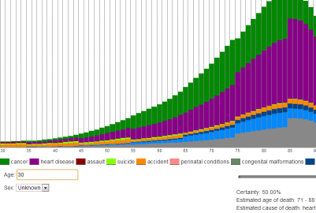

Seanna Musgrave portfolio

Death stats

Drama Free
Host List for U.S. Servas
Personal project
Website to help with party planning, allows users to anonymously submit which of their friends have personal conflicts with their other friends, so anyone planning a party can search groups for personal conflicts.
Tech:
- HTML/CSS/Javascript
- Facebook Graph API
- jQuery
- JQuery UI
- Server-side Python
- MySQL
Features:
- Autocomplete search string from users facebook friends
- Fairly complex graph algoritihm to effieciently find group conflicts in minimal time.